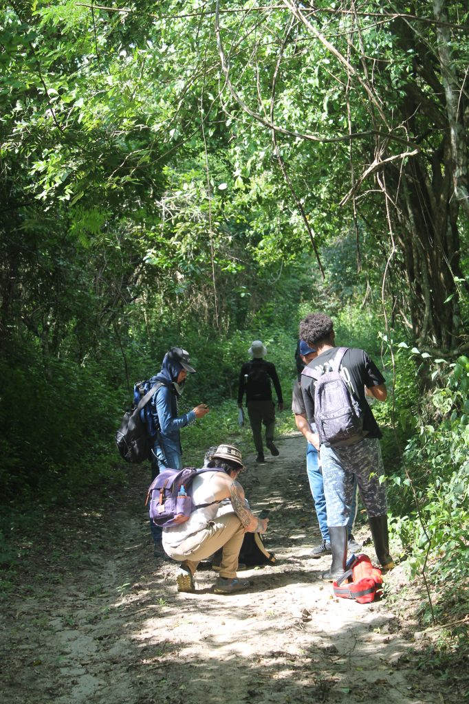

Sembrandopaz
Grassroots peacebuilding · Montes de María, Colombia
Cultivating peace, rooted in
community.
Twenty years of grassroots organizing, education, and land stewardship in Colombia’s Caribbean region.
- 20+
- Years of impact
- 300+
- Farmers trained
- 50+
- Leadership teams formed
- 170+
- Community enterprises supported
- 424
- Hectares protected & restored
Built Through Collaboration
For more than two decades, Sembrandopaz has built lasting relationships with community organizations, universities, faith-based institutions, and international partners working toward peacebuilding, environmental conservation, and sustainable development. Together, these collaborations have strengthened our ability to serve the communities of Montes de María.

Community peacebuilding
Peace begins with conversation.
Sembrandopaz strengthens communities across Montes de María through dialogue, leadership development, and honest relationship-building — bringing neighbors, local leaders, and institutions to the same table to imagine a more just and peaceful future together.

Environmental education
Tomorrow’s conservationists are already here.
At Villa Bárbara and the Morrocoy Nature Reserve, children, students, volunteers, and community partners get to know Colombia’s tropical dry forest up close — through programs like School in the Forest and our Ecological Youth Protectors. It’s hands-on, curious, and rooted in the idea that caring for the land starts with knowing it.

Restoration & conservation
Restoring forests, one tree at a time.
Communities across Montes de María are restoring and protecting the tropical dry forest — one of the world’s most endangered ecosystems — including at the Morrocoy Nature Reserve, where reforestation and conservation work is helping bring the land back for generations still to come.
Become Part of the Story
There are many ways to connect with Sembrandopaz — explore what fits, or simply reach out and start a conversation.

Visit Villa Bárbara
Our experimental farm shows what agroecology and land restoration can look like in the tropical dry forest.
Learn more
Explore Morrocoy
Over 1,000 acres of protected and restored tropical dry forest, home to endangered wildlife and growing conservation programs.
Learn more
Volunteer or Join a Delegation
Live and work alongside our team, or bring a group to see grassroots peacebuilding on the ground.
Get involved
“Here we are, with our hand on the plough, looking forward, with our hearts full of hope.”
Your gift grows a season of peace
Every contribution supports communities across Montes de María.